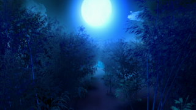

- Welcome to Touhou Wiki!
- Please register to edit. For assistance, check in with our Discord server or IRC channel.
Bamboo Forest of the Lost
Bamboo Forest of the Lost ma̠jo̞i no̞ t͡ɕikɯᵝɾĩɴ | |
|---|---|
|
 The Bamboo Forest of the Lost, as seen in Urban Legend in Limbo.
| |
| Location |
Opposite of the Youkai Mountain, near the Human Village |
| Residents |
|
Appearances | |
| Official Games | |
| |
| Print Works | |
| |
| Music CDs | |
| |
The Bamboo Forest of the Lost (迷いの竹林 Mayoi no Chikurin) is said to be located in the opposite direction to the Youkai Mountain when looking out from the Human Village. Legend has it that the forest was not originally a part of Gensokyo, but was washed over to Gensokyo by a big tsunami. Long long ago, the forest was known as Takakusa Commandery (高草郡 Takakusa Gun, literally "Tall Grass Commandery", an abolished administrative region in Inaba province in real life, now Tottori prefecture).[1] Inside of it lies the mansion Eientei.
Given the nature of the forest, it is very easy to get lost. There are no clearings, the ground is mostly flat & indistinguishable, and the bamboos grow quickly resulting in a constant change of scenery.
Fujiwara no Mokou lives here assisting any people who get lost, while Tewi Inaba and other rabbits can be seen wandering in the forest.
The Bamboo Forest's Appearances[edit]
Games[edit]
- Imperishable Night
The forest was first shown in stage 4 of Imperishable Night, where the boss of the stage is either Reimu Hakurei or Marisa Kirisame. After a misunderstanding in stage 3 at the Human Village, Keine Kamishirasawa will point the heroine to the forest as where the source of the incident is. When facing either Reimu or Marisa, they'll fight them whilst cutting through the forest rather aimlessly. Once defeating the boss, the heroine will find Eientei hidden deep within the forest. On the Extra stage about a month later, Kaguya Houraisan sent the heroine here again to fight Fujiwara no Mokou as assassins, only without them knowing. After fighting brutal fairies, they'll encounter Keine as a were-hakutaku before facing Mokou herself.
- Phantasmagoria of Flower View
The location once appeared as a stage in Phantasmagoria of Flower View, dedicated to Reimu, Marisa and Tewi Inaba. Many characters come to this place during the game looking for leads towards the flower incident, where the stage appears in many scenarios, encountering one of three said characters. In Eiki Shiki, Yamaxanadu's scenario, she'll come here to see on two separate occasions to see if Marisa and Tewi have been keeping up with what they (were supposed to have) learnt from the yama, which they haven't.
- Double Dealing Character
The forest once again makes a return in stage 3 of Double Dealing Character, where the heroine will encounter Kagerou Imaizumi as the stage boss. The heroine comes here after visiting Canal of Willows only to find more vicious youkai. After fighting Kagerou, they'll fly upwards to the skies of Gensokyo within a storm.
Spin-offs[edit]
The forest made an appearance as stage in Scarlet Weather Rhapsody, making it a location for many characters to fight. If one connects Touhou Hisoutensoku to SWR, then the stage can be selected in that game too.
- Impossible Spell Card
The bamboo forest appears on the third day of Impossible Spell Card, where Seija Kijin carries on defending herself from other youkai who are trying to capture her. It is here that she learnt that she'll be facing spell cards that are considered impossible to dodge. She'll fight against Kagerou Imaizumi, Keine Kamishirasawa and Fujiwara no Mokou as they try to capture her with their "impossible" spell cards. On Scene 1 when she'll face Kagerou, she learns that the task to catching her has spread, and she also learns to use the cheating item "Bloodthirsty Yin-Yang Orb". There are 7 scenes total in the day. The previous day was at the Myouren Temple, whilst the next day is located at the Myouren Temple Cemetery.
- Urban Legend in Limbo
The forest was added as a stage location in Urban Legend in Limbo, associating it with Fujiwara no Mokou. Some scenarios will show the player character coming across Mokou here. On Sumireko Usami's scenario, after she encountered Mokou and defeated her, Mokou kindly guided Sumireko out of the forest.
Gallery[edit]
The Bamboo Forest in Stage 4 of Imperishable Night
The forest with the fake moon from Imperishable Night
The forest with the real Moon in the Extra stage of Imperishable Night
The Bamboo Forest in Phantasmagoria of Flower View
Illustration from Perfect Memento in Strict Sense
The Bamboo Forest in Strange and Bright Nature Deity
The Bamboo Forest in Silent Sinner in Blue
The Bamboo Forest in Inaba of the Moon and Inaba of the Earth
The Bamboo Forest in Inaba of the Moon and Inaba of the Earth
The Bamboo Forest in Scarlet Weather Rhapsody

The Bamboo Forest in Double Dealing Character
The Bamboo Forest in Impossible Spell Card
Books and Articles[edit]
References[edit]
- ↑ Strange and Bright Nature Deity Chapter 3. The fairies and Reisen discuss the history of the forest.